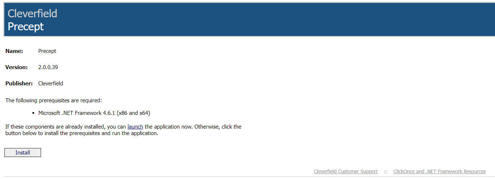
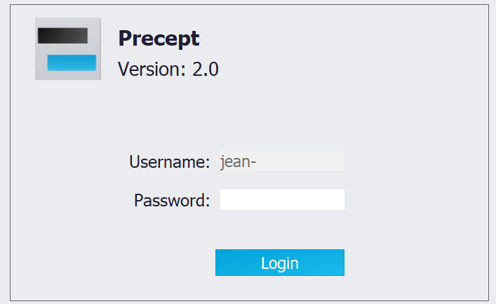

|
Installing and updating Precept
1. How Precept is delivered
Precept is installed with Microsoft ClickOnce, a deployment technology for self-updating Windows applications that install and run with minimal user interaction. Precept is published by Cleverfield SAS and the installation is digitally signed. Each company has its own installation link, which Cleverfield provides during the set-up of your licence; your IT department may also deploy Precept with its own procedure.
More information on ClickOnce: ClickOnce security and deployment (Microsoft).
2. Prerequisites
•A Windows PC. Precept runs on Microsoft .NET Framework 4.7.2; if it is missing, the installation page offers to install it first (this step may need administrator rights).
•Microsoft Edge WebView2 Runtime, used by the map, network and 3D views. It is normally already present on Windows 10 and 11.
•A Precept licence for your Windows user name (see section 5).
•Network access from the PC to the Precept database (TCP port 1433) and to the installation and update site (HTTPS). See Architecture.
•Optional, only for the features that use them: Petex IPM (GAP, Prosper) with OpenServer installed on the same PC for the GAP / Prosper coupling (Petex GAP / Prosper coupling), and Windows Subsystem for Linux with OPM Flow for reservoir simulation (Simulation coupling). Excel files are read and written by Precept itself; Microsoft Excel is only needed to open them.
3. Installing Precept
1.Open the installation link provided by Cleverfield for your company. The page shows the name (Precept), the version, the publisher and the required prerequisites.
2.Click "Install". If the prerequisites are already installed, you can click "launch" instead.
3.Confirm the Windows security prompt: check that the publisher is Cleverfield SAS, then click "Install".
4.Precept starts at the end of the installation. A "Precept" shortcut is created on the desktop and in the Start menu; use it to launch Precept afterwards.

The installation page (the version number and prerequisite shown are from an older release).
4. Start-up and log-in
Precept identifies you by your Windows user name: no separate account is created. At start-up the box "Checking Connection status and licenses" shows three indicators, green when the check passes and red when it fails:
•"Licenses": a valid licence exists for your Windows user name.
•"Connection to Precept server": the Precept database of your company can be reached.
•"Connection to Production database": the production allocation database can be reached (when your installation is connected to one).
If a password has been set up for your licence, a log-in panel appears: "Username:" is already filled with your Windows ID; type the "Password:" provided by Cleverfield and click "Login".

Messages you may see at start-up:
•"The license for user ... cannot be found": no licence exists for your Windows user name. Contact Cleverfield (contact@cleverfield.fr).
•"License for the user ... has expired.": the licence must be renewed.
•"You cannot connect to Precept since you are not accessing it through your company environment.": the licence is tied to your company's Windows domain; log on to the company network (or VPN) and try again.
•"No licenses available.": with concurrent licences, all licences are in use. The list of connected users is displayed.
•"Precept cannot connect to its database !" or "Precept cannot connect to Production Allocation Database !": the ribbon then shows only the "Connection Checker" button, which helps your IT department find the cause (firewall, VPN, port 1433).
5. Licences
A licence is attached to a Windows user name and to a company, and has an expiry date. Two licence types exist:
•Named licence: one licence per user.
•Concurrent licence: a number of users can work at the same time. The "Current Users" button on the main ribbon shows who is connected.
Super User status is also defined in the licence. Access to each asset is then managed inside Precept (see Security / Access policy).
6. Automatic updates
•Each time Precept is launched from its shortcut, it checks the installation site for a newer version before starting. When one exists, an update window appears; accept it and the new version is downloaded and started. Fixes therefore reach all users at their next launch.
•The first time a new version connects to your company's Precept database, it upgrades the database structure automatically. No action is needed, and existing scenarios are kept.
•To see the version installed, click "About Precept" on the main ribbon. Click "What's new?" in that window to read the release notes.
7. Uninstalling
Uninstall Precept from Windows "Settings" > "Apps", like any other application. Your scenarios are not affected: they are stored in the Precept database, not on the PC.
|